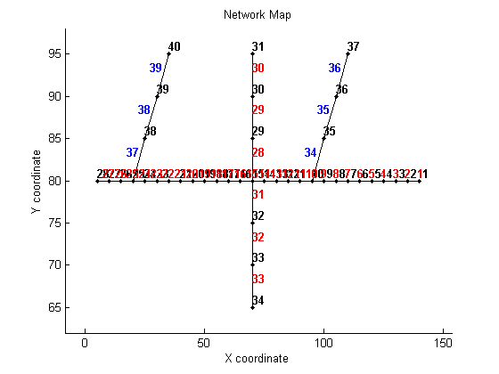
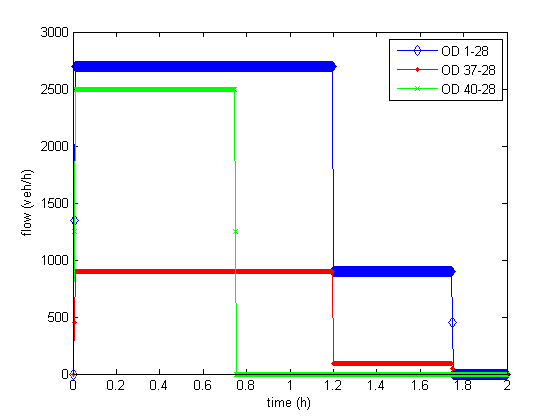
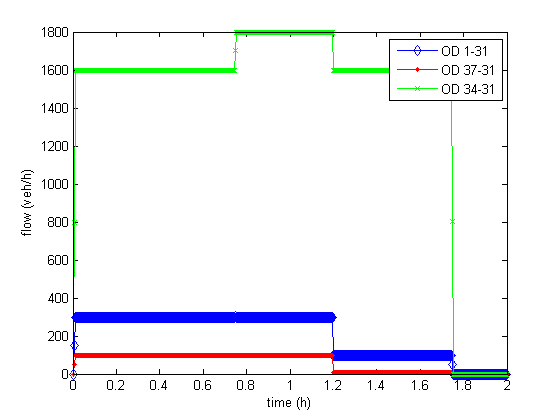
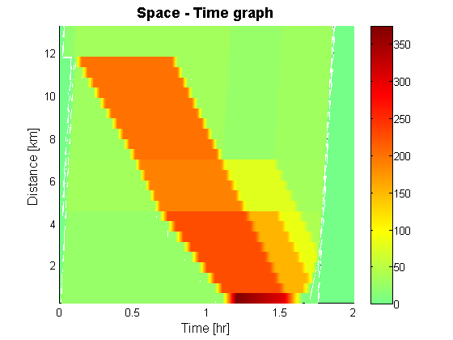
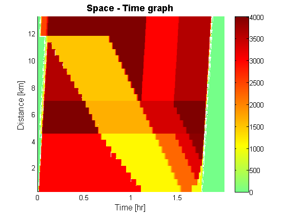
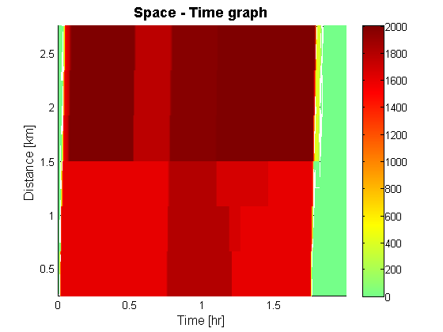
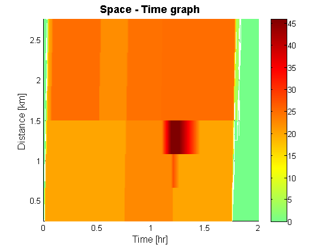

Tutorial 3: Comparing different node models with LTM
Contents
Disclaimer
This file is part of the matlab package for dynamic traffic assignments developed by the KULeuven.
Copyright (C) 2016 Himpe Willem, Leuven, Belgium
This program is free software: you can redistribute it and/or modify it under the terms of the GNU General Public License as published by the Free Software Foundation, either version 3 of the License, or any later version.
This program is distributed in the hope that it will be useful, but WITHOUT ANY WARRANTY; without even the implied warranty of MERCHANTABILITY or FITNESS FOR A PARTICULAR PURPOSE. See the GNU General Public License for more details.
You should have received a copy of the GNU General Public License along with this program. If not, see http://www.gnu.org/licenses/.
More information at: http://www.mech.kuleuven.be/en/cib/traffic/downloads or contact: willem.himpe {@} kuleuven.be
Introduction
This tutorial illustrates three different implementations of the node model. The node model forms a crurcial module of a dynamic network. In an explicit scheme such as the base implementation of the LTM, it is run for each node in the network and every time interval. If the node model complies with all requirements for a general node model it will propagate vehicles and spillback according to first-order kinematic wave theory. Only one of the presented node models satisfies all requirements. The alternatives do not.
%add these folders to the search path addpath('Dynamic Traffic Assignment','Visualization Tools','Network Data') %clear the work space clear %clear the command window clc %close all windows close all display('<<<Comparing different node models with LTM>>>')
<<<Comparing different node models with LTM>>>
Loading the data
The network represents a two-lane road with vehicles moving from right to left. There are two on-ramps feeding additional traffic into the system and one crossing road (moving from below to the top). The demand pattern is chosen such that the most downstream merge forms a temporary bottleneck and congestion spills back over the node.
% Network and demand data load net2.mat % Plot the network plotNetwork(nodes,links,true,[]);
Setup the simulation
Before the simulation can be run the time interval has to be set and the total number of time steps has to be defined. These are used to transform the different origin-destination (OD-) matrices into a 3D-matrix. The turning fractions have to be defined for each time interval. A small fraction (10%) of the vehicles on the main road make a right turn at the crossing road.
%setup the time interval and total number of time steps dt = 0.004; totT = 2/dt; %build the full ODmatrix [ODmatrix,origins,destinations] = buildODmatrix(ODmatrices,timeSeries,dt,totT); %initilize the Turning Fractions (easy if no diverges in the network) TF = num2cell(ones(size(nodes.id,1),totT)); for t=1:totT TF{10,t} = ones(2,1); TF{25,t} = ones(2,1); TF{15,t} = [0.9 0.1; 0 1 ]; end clear t;
Visualize the demand in the network
The demand between every origin-destination combination is plotted for each time interval of the simulation.
figure; plot(dt*[0:totT-1],reshape(ODmatrix(1,1,:),1,[]),'d-b',dt*[0:totT-1],reshape(ODmatrix(3,1,:),1,[]),'.-r',dt*[0:totT-1],reshape(ODmatrix(4,1,:),1,[]),'x-g') legend('OD 1-28','OD 37-28','OD 40-28') xlabel('time (h)') ylabel('flow (veh/h)') figure; plot(dt*[0:totT-1],reshape(ODmatrix(1,2,:),1,[]),'d-b',dt*[0:totT-1],reshape(ODmatrix(3,2,:),1,[]),'.-r',dt*[0:totT-1],reshape(ODmatrix(2,2,:),1,[]),'x-g') legend('OD 1-31','OD 37-31','OD 34-31') xlabel('time (h)') ylabel('flow (veh/h)') 
Compute the single-commodity Dynamic Network Loading
The link transmission model propagates the traffic in the simulation. It is composed of a link model and a node model that both have to be consistent with first-order traffic flow theory. Only the oriented capacity proportional model satisfies all requirements to be applied as a general node model. The same model without redistribution doesn't maximize throughput from a drivers perspective and the demand proportional node model violates the invariance principle.
- OC: oriented capacity proportional (standard)
- NR: oriented capacity proportional with no redistribution
- DP: demand proportional
bla
display('Running LTM') %link model Lmod = 'PQ'; %node model Nmod = 'OC'; %OC: oriented capacity proportional (standard) %NR: oriented capacity proportional with no redistribution %DP: demand proportional %run LTM tic [cvn_up,cvn_down] = LTM_SC(nodes,links,origins,destinations,ODmatrix,dt,totT,TF,Lmod,Nmod); toc
Running LTM Elapsed time is 6.402133 seconds.
Visualize the resulting densities and flows using XT diagrams
The result of the link transmission model is expressed in cumulative vehicle numbers (CVN) for every links upstream and downstream end over the time domain. Flows and densities are computed in post processing phase as time and space derivates of these CVN functions. Density and flow are depicted in space-time (or XT) diagrams of the main road annd the crossing road.
%compute the simulated densities & flows [simDensity] = cvn2dens(cvn_up,cvn_down,totT,links); [simFlows_down] = cvn2flows(sum(cvn_down,3),dt); %Main road plotXT(links,1:27,abs(simDensity),dt,totT); plotXT(links,1:27,simFlows_down,dt,totT-1); %Crossing road plotXT(links,[33:-1:31,28:30]',simFlows_down,dt,totT-1); plotXT(links,[33:-1:31,28:30]',simDensity,dt,totT);   
Closing notes
- To compare the node models it is required to rerun the script while the Nmod parameter is adjusted.
- Note how for the node model without redistribution the link capacity towards destination 31 is not fully used during spill back.
- To see the effect of the demand proportional node model the demand has to be varied over a range of values.